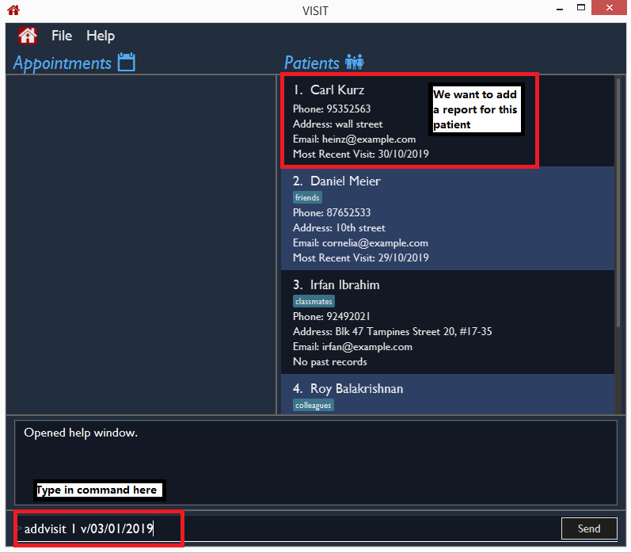
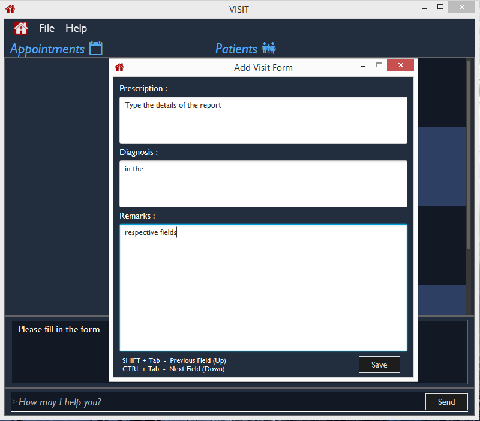
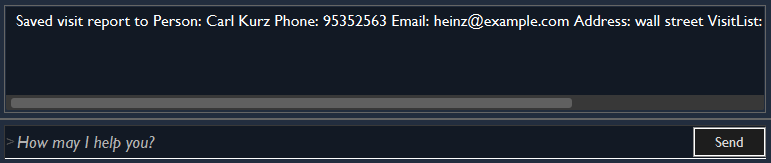
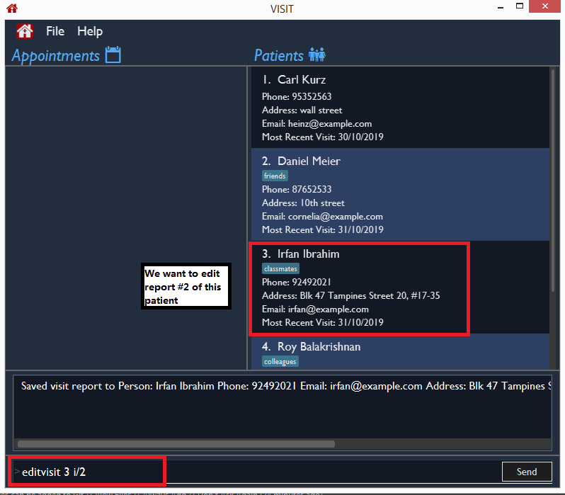
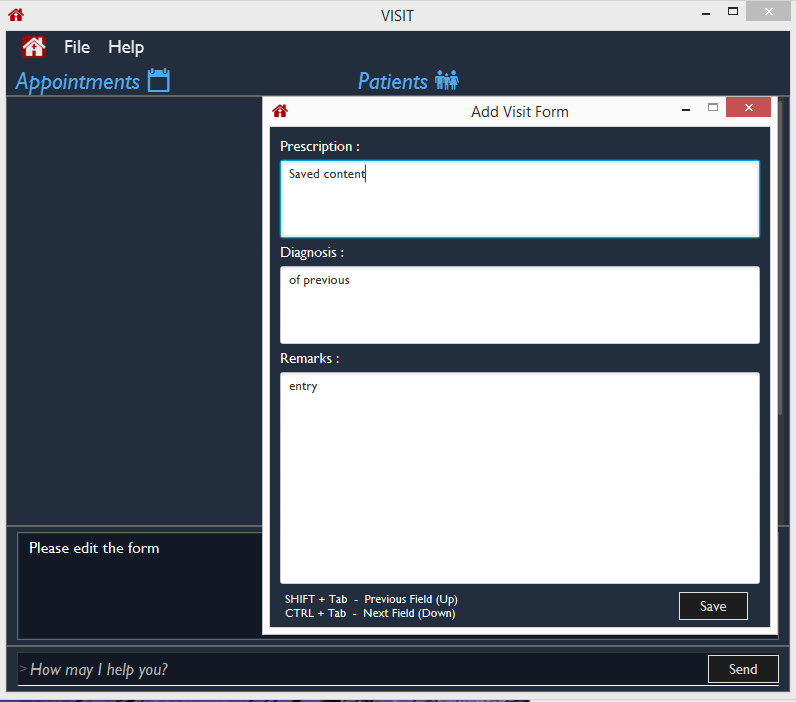
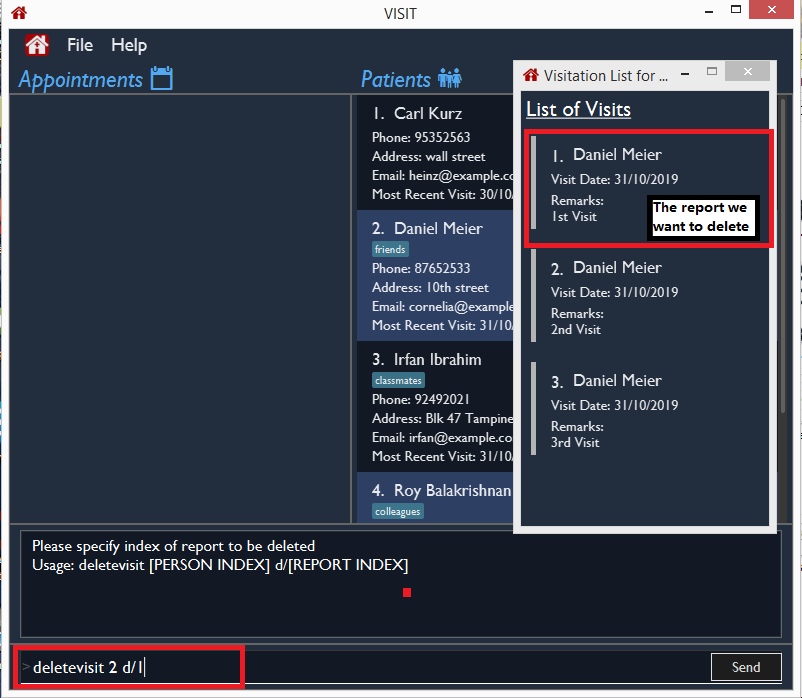

By: Team UnrealUnity Since: Sep 2019 Licence: MIT
1. Introduction
VISIT is a desktop address book application for Doctors to plan their visits and manage their patient information. Most notably, VISIT is optimized for Doctors who prefer to use a Command Line Interface (CLI) while still having a pleasant Graphical User Interface (GUI). If your typing speed is sufficiently quick, VISIT can greatly increase your efficiency in managing your patient profiles and appointments. Interested in spending less time resolving logistical hiccups and more time doing your job? Jump to the Section 2, “Quick Start” to get started. Enjoy!
2. Quick Start
-
Ensure you have Java
11or above installed in your Computer. -
Download the latest
VISITapp.jarhere. -
Copy the file to the folder you want to use as the home folder for VISIT.
-
Double-click the file to start the app. The GUI should appear in a few seconds.

-
Type the command in the command box and press Enter to execute it.
e.g. typinghelpand pressing Enter will open the help window. -
Some example commands you can try:
-
list: lists all patients -
addn/John Doe p/98765432 e/johnd@example.com a/John street, block 123, #01-01: adds a patient namedJohn Doeto VISIT’s address book. -
delete3: deletes the 3rd contact shown in the current list -
exit: exits the app
-
-
Refer to Section 3, “Features” for details of each command.
3. Features
Command Format
-
All commands listed are case-insensitive.
-
Words in
UPPER_CASErepresent the parameters to be specified.
e.g. inadd n/NAME,NAMEis a parameter which can be used asadd n/John Doe. -
Items in square brackets are optional.
e.gn/NAME [t/TAG]can be used asn/John Doe t/coughor asn/John Doe. -
Items with
… after them can be used optionally or multiple times.
e.g.[t/TAG]…can be used ast/cancer,t/pneumonia t/h1n1etc. -
Parameters can be in any order if suffixes like "n/" or "p/" are specified.
e.g. if the command specifiesn/NAME p/PHONE_NUMBER,p/PHONE_NUMBER n/NAMEis also acceptable.
3.1. Application Commands
3.1.1. Viewing help : help
Shows a quick list of user commands. A link to this User Guide is also provided for the full overview of commands.
Format: help
3.1.2. Exiting the program : exit
Exits the program.
Format: exit
3.2. Viewing and Managing Patients
VISIT can store all the patient information for doctors to have them easily accessible. The following commands enable doctors to be able to add patients and their relevant particulars to be tracked by VISIT, and also view a list of patients that have been entered.
3.2.1. Listing all patients : list
Shows a list of all patients in the address book.
Format: list
3.2.2. Adding a patient : add
Adds a patient to VISIT’s address book.
Format: add n/NAME p/PHONE_NUMBER e/EMAIL a/ADDRESS [t/TAG]…
| A patient can have any number of tags (including 0) |
Examples:
-
add n/John Doe p/98765432 e/johnd@example.com a/John street, block 123, #01-01 -
add n/Betsy Crowe t/cold e/betsycrowe@example.com a/Changi Hospital p/1234567 t/pneumonia
3.2.3. Editing a patient’s particulars : edit
Edits an existing patient in the address book.
Format: edit INDEX [n/NAME] [p/PHONE] [e/EMAIL] [a/ADDRESS] [t/TAG]…
Examples:
-
edit 1 p/91234567 e/johndoe@example.com
Edits the phone number and email address of the 1st patient to be91234567andjohndoe@example.comrespectively. -
edit 2 n/Betsy Crower t/
Edits the name of the 2nd patient to beBetsy Crowerand clears all existing tags.
3.2.4. Locating patient by name : find
Finds patients whose names contain any of the given keywords.
Format: find KEYWORD [MORE_KEYWORDS]
Examples:
-
find John
ReturnsjohnandJohn Doe -
find Betsy Tim John
Returns any patient having namesBetsy,Tim, orJohn
3.2.5. Viewing a Patient’s Full Profile : profile
Opens up a new pop-out panel showing the specified patient’s details (Name, Phone, Email, Address, Tags, Visitation reports). The panel can then be closed by pressing q to quit, or p to generate a text file of the profile.
Format: profile INDEX
Generated text version of profiles are saved under the generated_profiles folder of the application.
|
Examples:
-
profile 2
Opens up a pop-up panel detailing the profile of the patient with the index of 2.
3.2.6. Deleting a patient : delete
Deletes the specified patient from the address book.
Format: delete INDEX
Examples:
-
list
delete 2
Deletes the 2nd patient in the address book. -
find Betsy
delete 1
Deletes the 1st patient in the results of thefindcommand.
3.2.7. Clearing all patient data : clear
Clears all entries from the address book.
Format: clear
| Be careful when entering this, as this will erase all patient data from VISIT! |
3.3. Viewing and Managing Visits
VISIT enables doctors to also track the visitations for each patient, allowing the specification of diagnosis, medications prescribed as well as other general comments per visit.
3.3.1. Adding a new visitation report for a patient : addvisit
Opens a pop-up panel that enables the specification of a new visitation report for a particular patient.
Format: addvisit INDEX [v/DATE]
Example:
Let’s say that you have just got a patient’s folder of past visits and you want to record a house call made on 3rd January 2019. The patient is 1st in the list.
To enter the details of the report into VISIT:
-
Type
addvisit 1 v/03/01/2019into the command box and press Enter to execute it.-
Date must be in the "dd/MM/2yyy" format (i.e.
v/19/10/2019)If no date is specified and the command is used without the prefix 'v/' (for example addvisit 1), the report will default to the current local date of the computer.
-
-
Key in the details in the respective fields of the pop-up form that appears.
-
Press CTRL + Tab to navigate to the next field (down)
-
Press SHIFT + Tab to navigate to the previous field (up)
-
-
Click the Submit button or press F2 to save your entry.
-
The pop-up form closes and the display box will display a message indicating a successful entry.
While addvisit 1is valid, typing inaddvisit 1 v/without a valid date will give an error.
3.3.2. Editing the particulars of a visitation report : editvisit
Opens a pop-up panel that enables the editing of an existing visitation report of a particular patient.
Format: editvisit INDEX [i/REPORT INDEX]
If no report index is specified, editvisit INDEX will open a panel showing the reports of that patient and the relevant indexes of the reports. To edit the visit report, simply re-enter the command with the desired report index.
|
Example:
Let’s say you want to edit the 2nd visit report of a patient and the patient is the 3rd name in the list.
-
Type
editvisit 3 i/2into the command box and press Enter to execute it. -
Key in the details in the respective fields of the pop-up form(which is pre-filled with the existing information of the report) that appears.
-
Press CTRL + Tab to navigate to the next field (down)
-
Press SHIFT + Tab to navigate to the previous field (up)
-
-
Click the Submit button or press F2 to save your edits.
-
The pop-up form closes and the display box will display a message indicating a successful entry.
| An error will be thrown if the report with the given report index does not exist or the index given is not a number. |
3.3.3. Deleting a visitation report : deletevisit
Deletes the specified visitation report.
Format: deletevisit INDEX [d/REPORT INDEX]
If no report index is specified, deletevisit INDEX will open a panel showing the reports of that patient and their relevant indexes of the reports. To delete the visit, simply re-enter the command with the desired report index.
|
Example:
Let’s say you want to delete the 1st visit report of a patient and the patient is the 2nd name in the list.
-
Type
deletevisit 2 d/1into the command box and press Enter to execute it. -
A panel showing the list of reports will be shown, now without the deleted report and the display box will display a message indicating a successful deletion.
| An error will be thrown if the report with the given report index does not exist or the index given is not a number. |
For both deletevisit and editvisit commands if the patient has no past records, a pop up with the message "Patient has no past records" will be shown instead of a list of reports when editvisit [INDEX] or deletevisit [INDEX] is run. Note that an error will be raised if the report index is provided to a patient with no past records, for example editvisit [INDEX] i/1 or deletevisit [INDEX] d/1.
3.4. Appointment System
VISIT also enables doctors to keep abreast and up-to-date on any events or deadlines as VISIT can be customized to remind them of any follow-up visits or other timed reminders.
There are two kinds of Appointments: Follow-Ups and Reminders.
3.4.1. Adding a follow-up visit with patient : followup
Adds a follow-up visit for a particular patient. The application will keep track of when your next appointment with the patient is on the Appointments window.
Format: followup INDEX [d/DAYS]
| The follow-up entry will by default generate the follow-up for 7 days' time if not specified. |
Examples:
-
followup 9 d/10
Creates a follow-up entry on patient with index 9 for 10 days later.
3.4.2. Creating a generic reminder : reminder
Creates a new reminder to show up in the Appointments window.
Format: reminder TEXT [d/DAYS]
| The reminder entry will by default generate the prompt for 7 days' time if not specified. |
Examples:
-
reminder Two Point Hospital closed d/7
Creates a reminder "Two Point Hospital closed" that will display for the next 7 days.
3.4.3. Removing an Appointment : removeappt
Remove an appointment from VISIT. This can be either a Follow-up or Reminder.
Format: removeappt DESCRIPTION [d/DAYS]
| Any appointment matching just the description will be removed if the specific days is not specified. |
Examples:
-
removeappt Two Point Hospital closed d/7
Removes an appointment which description is "Two Point Hospital Closed" and had 7 days remaining. -
removeappt Satya Nadella
Removes any appointments with the patient whose name is Satya Nadella.
3.4.4. Show Appointments "Message of the Day" box : show
Shows a pop-up containing the appointments. This is useful if you want to keep a small window just containing the appointments on the screen.
Format: show
3.4.5. Sort Appointments : sort
Sorts the appointments in order of type, days remaining, and finally by name.
Format: sort
3.5. Optimization for Command-Line Interface (CLI) Users
VISIT being an application optimized for doctors who are comfortable with CLI, has support for features such as aliasing for commands to enable command entries which are often used to be stored and used quickly and easily.
3.5.1. Setting a shorthand command / alias : alias
Set an alias for a command to enable faster command entry for a customized input.
Format: alias l/SHORTHAND v/COMMAND
Examples:
-
alias l/ls v/list
Typinglsnow works equivalently as typinglist. -
alias l/show all patients v/list
Typingshow all patientsnow works equivalently as typinglist.
3.5.2. Removing a shorthand command / alias : unalias
Delete an existing alias.
Format: unalias SHORTHAND
Examples:
-
unalias ls
Typinglswill no longer be equivalent to typinglist.
3.5.3. Showing all existing shorthand commands / aliases : aliaslist
Show all existing aliases.
Format: aliaslist
Examples:
-
aliaslist
Shows all the existing aliases.
3.6. Saving the data
VISIT’s address book data are saved in the hard disk automatically after any command that changes the data.
There is no need to save manually.
3.7. Upcoming Features
The following features are intended for a later release of VISIT that will further expand on the managing power doctors will be able to execute using the application.
3.7.1. Inventory System [Coming in v2.0]
VISIT v2.0 will include an inventory system for doctors to manage and organise their medical stores.
Doctors will be able to generate the list of medication in their stock and assign them to patients using the app
, which automatically deducts from that list.
Warnings of low stocks are also an intended feature.
3.7.2. Printing of Medical Certificates [Coming in v2.0]
In v2.0, VISIT will allow doctors to easily print an official Medical Certificate with a single command.
3.7.3. Microsoft Azure Integration [Coming in v2.0]
Microsoft Azure is a popular Cloud Computing platform that allows for data analysis, remote deployment and user authentication resources. We plan to leverage this power in VISIT v2.0 so that doctors may securely access VISIT from any location, truly bringing VISIT on-the-go.
4. FAQ
Q: How do I transfer my saved patient and visit data to another Computer?
A: Install VISIT in the other computer, run it once, typing exit to exit the application. Next, overwrite the generated data folder created with the data folder of your previous installation folder for VISIT.
Q: How do I transfer my shorthand command data to another Computer?
A: Install VISIT in the other computer and copy the preferences.json file from the previous installation folder for VISIT into the installation folder on the new computer.
5. Command Summary
5.1. Application Commands
-
Viewing help :
help -
Exiting the program :
exit
5.2. Viewing and Managing Patients
-
Listing all patients :
list -
Adding a patient :
add n/NAME p/PHONE_NUMBER e/EMAIL a/ADDRESS [t/TAG]…
e.g.add n/Betsy Crowe t/cold e/betsycrowe@example.com a/Changi Hospital p/1234567 t/pneumonia -
Editing a patient’s particulars :
edit INDEX [n/NAME] [p/PHONE] [e/EMAIL] [a/ADDRESS] [t/TAG]…
e.g.edit 2 n/Betsy Crower t/ -
Locating patient by name :
find KEYWORD [MORE_KEYWORDS]
e.g.find Betsy Tim John -
Viewing Full Profile :
profile INDEX
e.g.profile 1 -
Deleting a patient :
delete INDEX
e.g.delete 2 -
Clearing all patient data :
clear
5.3. Viewing and Managing Visits
-
Adding a new visitation report for a patient :
addvisit INDEX [v/DATE]
e.g.addvisit 1 v/19/10/2019 -
Editing the particulars of a visitation report :
editvisit INDEX [i/REPORT INDEX]
e.g.editvisit 1 i/1 -
Deleting a visitation report :
deletevisit INDEX [d/REPORT INDEX]
e.g.deletevisit 1 d/1
5.4. Appointment System
-
Adding a follow-up reminder with patient :
followup INDEX [d/DAYS]
e.g.followup 9 d/10 -
Creating a generic reminder :
reminder TEXT [d/DAYS]
e.g.reminder Two Point Hospital closed d/7 -
Removing an Appointment :
removeappt DESCRIPTION [d/DAYS]
e.g.removeappt Two Point Hospital closed d/7 -
Show Appointments "Message of the Day" box :
show -
Sort Appointments :
sort
5.5. Optimization for Command-Line Interface (CLI) Users
-
Setting a shorthand command / alias :
alias l/SHORTHAND v/COMMAND
e.g.alias l/show all patients v/list -
Removing a shorthand command / alias :
unalias SHORTHAND
e.g.unalias show all patients -
Showing all existing shorthand commands / aliases :
aliaslist